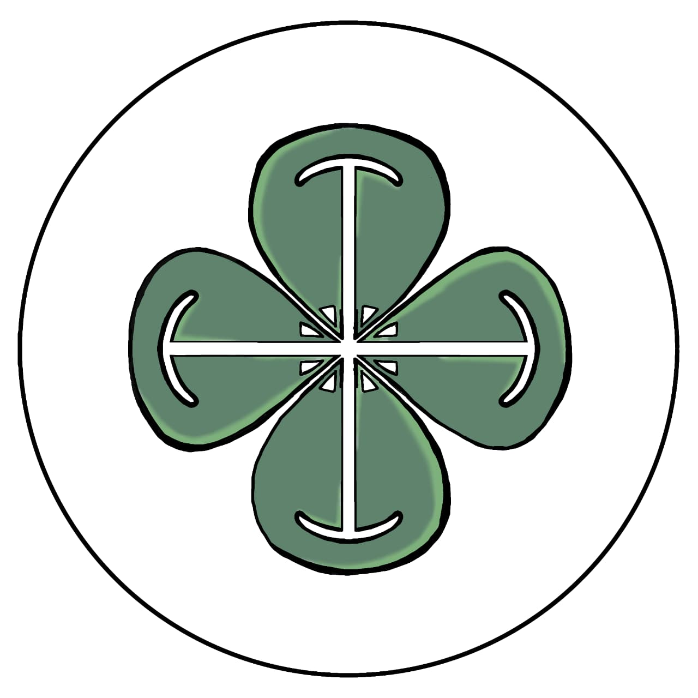

Welcome to Quattro Group's Project

Filsofi Logo
Logo ini melambangkan semangat Kelompok 8 dalam mendukung pendidikan yang berkualitas dan mudah dijangkau melalui teknologi. Pendidikan diharapkan dapat menjadi jalan untuk menambah ilmu, mengembangkan kreativitas, dan membuka peluang untuk meraih masa depan yang lebih baik.
- • Daun semanggi dengan empat helai berwarna hijau
muda dan hijau tua melambangkan persatuan dan
kerja sama dari empat anggota yang memiliki
karakter serta kemampuan yang berbeda.
Perpaduan warna hijau menggambarkan
pertumbuhan, kreativitas, dan perkembangan,
sedangkan empat helai daun mencerminkan
kesatuan dalam mencapai tujuan bersama.
Daun semanggi juga menjadi simbol keberuntungan
dan harapan, yang menggambarkan harapan agar
setiap langkah kelompok membawa hasil yang
baik. Dalam bidang Informatika, simbol ini
merepresentasikan kolaborasi, inovasi,
perkembangan teknologi, serta keberuntungan
dalam mencapai kesuksesan bersama.